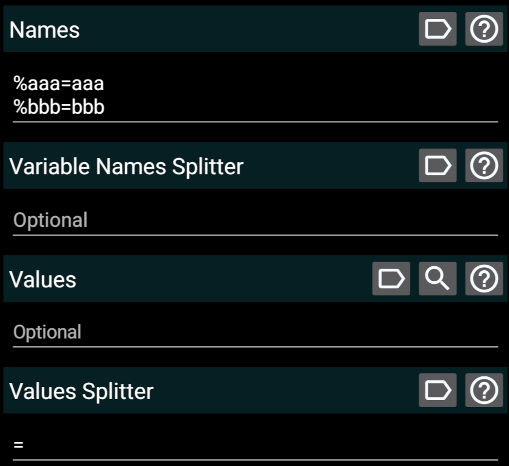

Multiple Variables Set
Set the value on multiple variables in a single action.
Directly Setting Values in the Names field (Tasker 6.3.3-beta+)
As of Tasker 6.3.3-beta you can use an alternative way of setting the variables. If
- the Names field contains the Values Names Splitter
- the Values field is empty
- the Values Names Splitter field does not contain valid Tasker variable name characters only
then you can set values directly in the Names field.
For example, if you use this configuration:

then
- %aaa will be set to
aaa - %bbb will be set to
bbb
This allows for a more visual style of setting the variables.
Action Inputs
Names
One or more comma separated variable names
Variable Names Splitter
Splitter for the variable names above.
By default is , or new line depending on what you use.
Values
One or more values, each corresponding to the variable names above.
If more variable names than values exist, those variables will be unset.
Values Splitter
Splitter for the values above.
By default is , or new line depending on what you use.
Do Maths
Will do maths on the values that support maths and leave the others as normal text.
Keep Existing
Will only set the values of variables if they don't already exist by this point in the task.